Visual Perl/Tk editor (widget edition) - tutorial
Introduction
This document created as 1st responce to VPTK_W users that
requested some "howto" information about interactive GUI
development. Since it's a non-commercial, open source project,
and the author is not professional technical writer the
document could be considered as starting-level tutorial.
If you've any questions, suggestions or bug reports - please
let me know and I'll do my best to proceed it as soon as
possible. Good luck!
Lesson 1. Getting started
Run vptk_w.pl from path where it's installed in your system. If
your environment variable $PATH (or %PATH% in MS Win) contain path
to VPTK directory you can just run vptk_w.pl without full path.
Refer to your system adminstrator if you are failing to run vptk_w.pl
For GUI environment that support desktop icons or launchpads it
could be useful to create shortcut with icon of your choice.
Needless to say that you should run vptk_w.pl in GUI environment
(console-only connection is not enough) and Perl/Tk should be
installed. Good test for both of mentioned conditions is "widgets"
demo program supplied with Perl/Tk - if you succeeded to run it,
than most chances that vptk_w.pl will run too.
In the picture below you can see main elements of the editor:
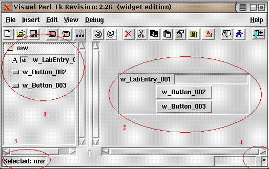
1 - widgets tree; hierarhy presentation of your design
2 - application window; here design displayed "as is"
3 - current selection; most of editor operations performed with
currently selected widget and it's sub-widgets (if any)
4 - modification flag; indicator that reflect modification status.
When star displayed here your design should be saved to retain
last changes
All the rest elements are quite intuitive - you can guess their
function using common sense and computer environment experience.
For details please refer to vptk_w.pl built-in help.
Lesson 2. Creating simple GUI application
Let's start vptk_w.pl and try to create kind of "Hello, world!"
application.
At the beginnig, you can see poping-up 'project settings' window.
Here you can specify window title, project description and other
common parameters.
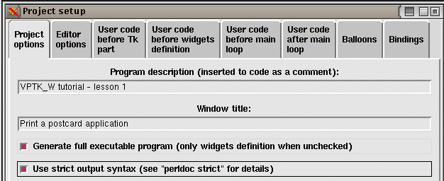
Now let's start to put some contents. Generally you can create
widgets after, before and under selected widget. Since at the
beginning our design is empty we can create only sub-widget of
main window (mw).
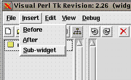
In pop-up window let's select "LabEntry" widget type. The widget
of this type is capable to display prompt message and accept user
input. It will be a main element of our sample design.
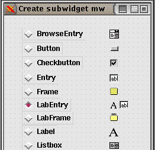
Just click on 'Proceed' in next dialog box - widget object
variables are out of our scope.
 Let's repeat the same insert action and create two button-type
elements so our design will look like on picture presented before:
Now our widgets already placed under main window and ready to run,
but we've to connect those widgets (from functional point of view)
in order to allow this program to produce some results.
Double-click on LabEntry widget to get widget's properties
window. On the left you can see widget-specific properties and on
the right - geometry management controls. Let's leave default
geometry manager for this lesson and concentrate on widget's content.
Enter prompt message "Your name:" in field "-label". In field
"-textvariable" enter reference to variable "name" as shown on
picture below:
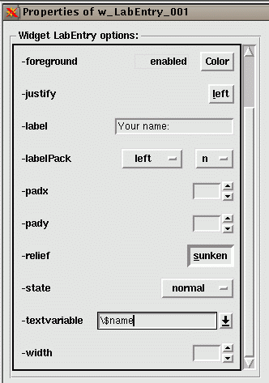
Click "Accept" button on the bottom of dialog window - now your
changes stored in LabEntry_001 properties.
Let's open the 1st button properties and connect it to
card printing procedure. Scroll down properties and in field
"-text" enter "Print a card". Click "Accept" and go to main menu.
Select "File" -> "Project properties" and go to "User code
after main loop".
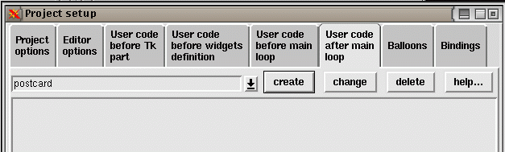
Type procedure name "postcard" and click "create" button. Now
click on "change" button and type postcard printing operators
inside the function:
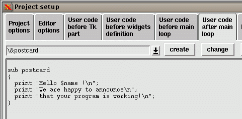
Click "Ok" and go back to "Button_002" properties. Just for
a variety you can select the widget icon on widgets tree and
click "Properties" button on toolbar. Click down-arrow button
next to "-command" entry-box and select "postcard" subroutine
reference.
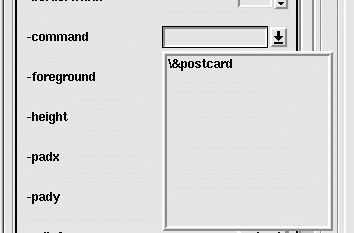
Now our program is almost complete. You can ever save it and
run instantly. Click on "save" icon and than on "run" icon":
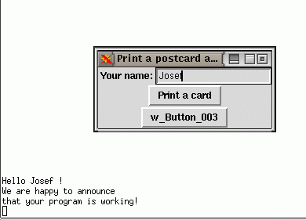
Great! Our program is working, but how to close all those
windows? You can close application window using your window
manager controls (in most cases 'x' button on the top of
application window). The "output log" window opened in
Unix-like systems that support X-terminals running Unix
utility "less" so you should know how to exit from it (type
"q" inside xterm window).
Now we've to supply additional service to our user - the way
to finish the application. As we mentioned previously, you
always can close application window using window manager
controls ('x' button, keyboard shortcut or window menu),
but it would be nice to allow "controlled" exit from
application. For that purpose we created button widget
"Button_003". Double-click on it (or use right-click
and select "properties"). First of all, let's emphasize
the button functionality by it's color - select red
background color (label "-background") and enter message
"exit" at "-text" field.
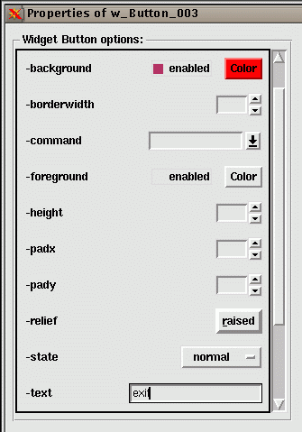
In field "-command" enter anonimous procedure "sub {exit}"
that wraps standard Tk "exit" procedure. Generally we can
write here a reference to any procedure to be called
when this button activated.
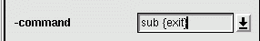
Finally our application window will look like this:
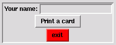
Don't forget to save it and it's ready to run.
Lesson 3. More complicated case
In this lesson we'll try to create grid-based application.
This mean that each widget will have it's row/column coordinate
on imaginary grid inside main window (mw).
The way we create widget remain very similar to previous lesson:
after running vptk_w.pl we fill application-specific fields in
project properties window.
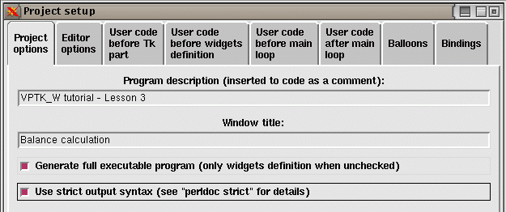
Then create sub-widget of type "Label":
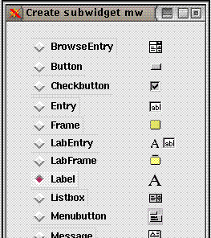
Open "Label_001" widget's properties.
Type prompt message "Card 1:" in "-text" field.
Now let's switch to the right part of "properties" window:
select "grid" as widget's geometry and click "Accept" to
commit your changes.
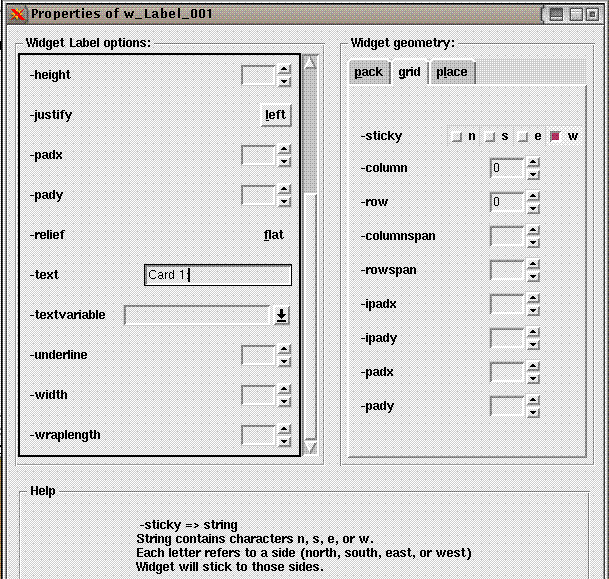
Next element we'll place AFTER label widget, so please make
sure you select respective option from menu (or use "insert
after" button on toolbar).
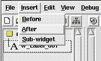
Now select "Entry" type and proceed.
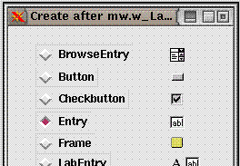
Since we has no opportunity to set new widget's geometry it
was inherited from 1st one. It was done automatically to
prevent geometry conflict between neighbor elements. As a
result the new widget's coordinates became equal to 1st
widget ones. VPTK_W has it's own mechanism for such conflicts
re-solving. Now our new widget automatically moved one row down.
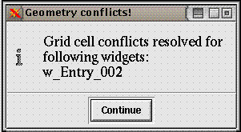
We need the entry widget to be on the same row as
label, so let's open newly created widget's properties
and fix it's geometry placement as shown:
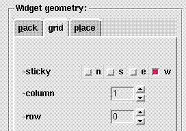
Try to create rest of widgets to get the following
design:
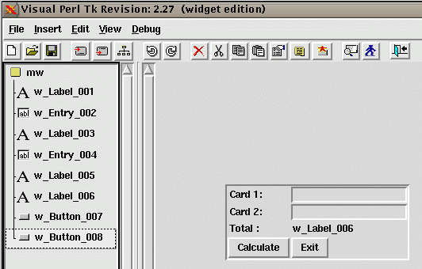
Note that rows and columns are numbered from zero. Each
time you see that widget's coordinates differ from
required, simply open widget's properties and change
"-row" and "-column" values.
Now let's connect widgets to get desired functionality.
Open 1st entry widget properties and set "-textvariable"
value to \$card1 (pointer to variable):
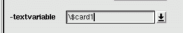
Repeat the same procedure for 2nd entry but with pointer
to other variable \$card2.
And finally apply the same procedure to widget "Label_006":
insert reference to variable $total in field "-textvariable".
As usual let's create routine for button callback. First,
select from main menu "File" -> "Project properties";
select tab "User code after main loop" and create
subroutine "calc_sum".
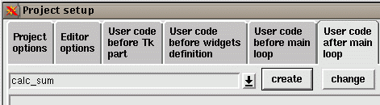
The function content should be quite primitive:
sub calc_sum
{
$total = $card1 + $card2;
}
To finish editing click on "Ok". Now open properties of
"Button_007" (labelled as "Calculate") and select reference
to newly created subroutine in field "-command".
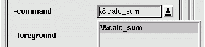
And as usual, after saving the project you can run it
instantly. If everything went well your application should
calculate the sum of two fields in "card1" and "card2"
and display the result behind it.
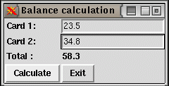
Finally we can define graceful exit procedure from our
application. Open properties of "Button_008" and enter
anonimous procedure as "-command" field content:
Lesson 4. Balloons and event bindinig
To be continued ...
Let's repeat the same insert action and create two button-type
elements so our design will look like on picture presented before:
Now our widgets already placed under main window and ready to run,
but we've to connect those widgets (from functional point of view)
in order to allow this program to produce some results.
Double-click on LabEntry widget to get widget's properties
window. On the left you can see widget-specific properties and on
the right - geometry management controls. Let's leave default
geometry manager for this lesson and concentrate on widget's content.
Enter prompt message "Your name:" in field "-label". In field
"-textvariable" enter reference to variable "name" as shown on
picture below:
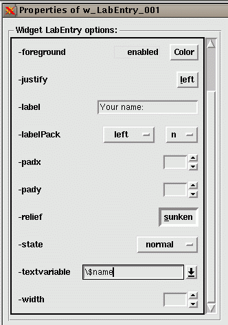
Click "Accept" button on the bottom of dialog window - now your
changes stored in LabEntry_001 properties.
Let's open the 1st button properties and connect it to
card printing procedure. Scroll down properties and in field
"-text" enter "Print a card". Click "Accept" and go to main menu.
Select "File" -> "Project properties" and go to "User code
after main loop".
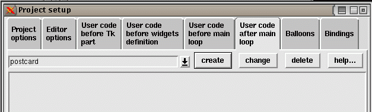
Type procedure name "postcard" and click "create" button. Now
click on "change" button and type postcard printing operators
inside the function:
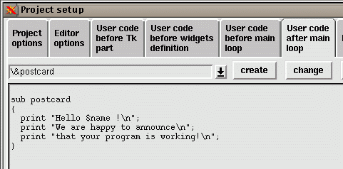
Click "Ok" and go back to "Button_002" properties. Just for
a variety you can select the widget icon on widgets tree and
click "Properties" button on toolbar. Click down-arrow button
next to "-command" entry-box and select "postcard" subroutine
reference.
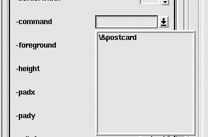
Now our program is almost complete. You can ever save it and
run instantly. Click on "save" icon and than on "run" icon":
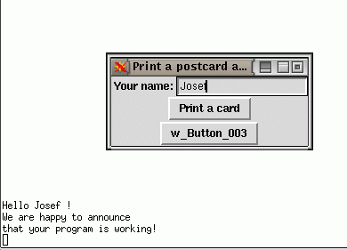
Great! Our program is working, but how to close all those
windows? You can close application window using your window
manager controls (in most cases 'x' button on the top of
application window). The "output log" window opened in
Unix-like systems that support X-terminals running Unix
utility "less" so you should know how to exit from it (type
"q" inside xterm window).
Now we've to supply additional service to our user - the way
to finish the application. As we mentioned previously, you
always can close application window using window manager
controls ('x' button, keyboard shortcut or window menu),
but it would be nice to allow "controlled" exit from
application. For that purpose we created button widget
"Button_003". Double-click on it (or use right-click
and select "properties"). First of all, let's emphasize
the button functionality by it's color - select red
background color (label "-background") and enter message
"exit" at "-text" field.
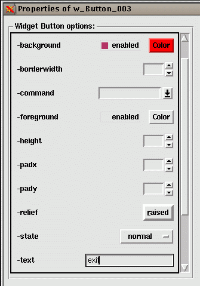
In field "-command" enter anonimous procedure "sub {exit}"
that wraps standard Tk "exit" procedure. Generally we can
write here a reference to any procedure to be called
when this button activated.
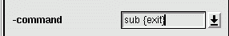
Finally our application window will look like this:
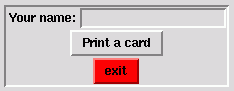
Don't forget to save it and it's ready to run.
Lesson 3. More complicated case
In this lesson we'll try to create grid-based application.
This mean that each widget will have it's row/column coordinate
on imaginary grid inside main window (mw).
The way we create widget remain very similar to previous lesson:
after running vptk_w.pl we fill application-specific fields in
project properties window.
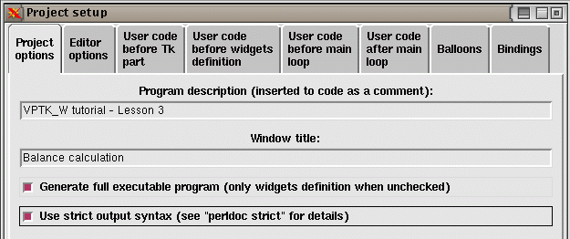
Then create sub-widget of type "Label":
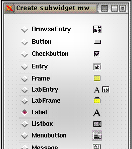
Open "Label_001" widget's properties.
Type prompt message "Card 1:" in "-text" field.
Now let's switch to the right part of "properties" window:
select "grid" as widget's geometry and click "Accept" to
commit your changes.
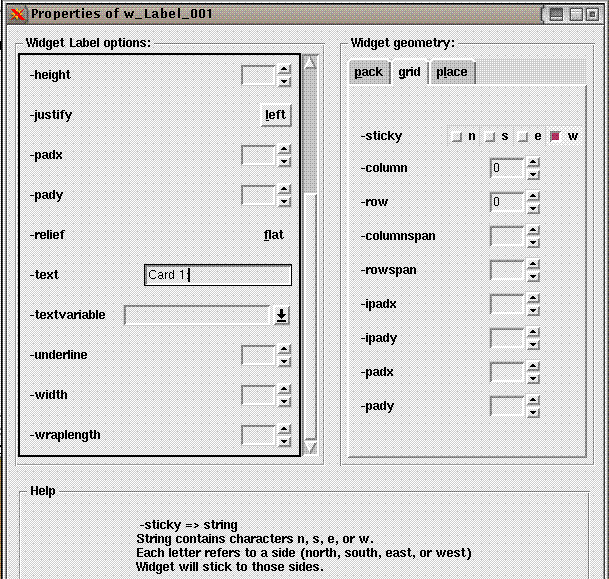
Next element we'll place AFTER label widget, so please make
sure you select respective option from menu (or use "insert
after" button on toolbar).
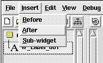
Now select "Entry" type and proceed.
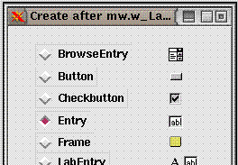
Since we has no opportunity to set new widget's geometry it
was inherited from 1st one. It was done automatically to
prevent geometry conflict between neighbor elements. As a
result the new widget's coordinates became equal to 1st
widget ones. VPTK_W has it's own mechanism for such conflicts
re-solving. Now our new widget automatically moved one row down.
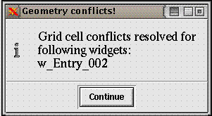
We need the entry widget to be on the same row as
label, so let's open newly created widget's properties
and fix it's geometry placement as shown:
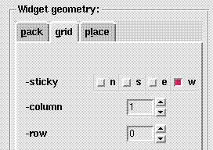
Try to create rest of widgets to get the following
design:
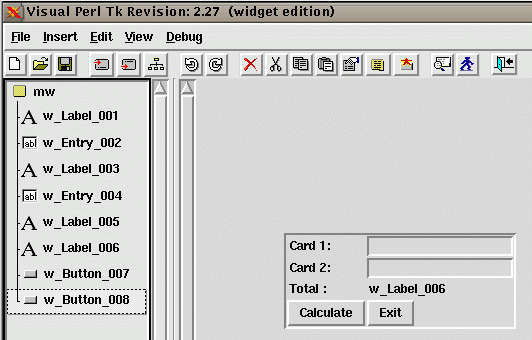
Note that rows and columns are numbered from zero. Each
time you see that widget's coordinates differ from
required, simply open widget's properties and change
"-row" and "-column" values.
Now let's connect widgets to get desired functionality.
Open 1st entry widget properties and set "-textvariable"
value to \$card1 (pointer to variable):
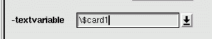
Repeat the same procedure for 2nd entry but with pointer
to other variable \$card2.
And finally apply the same procedure to widget "Label_006":
insert reference to variable $total in field "-textvariable".
As usual let's create routine for button callback. First,
select from main menu "File" -> "Project properties";
select tab "User code after main loop" and create
subroutine "calc_sum".
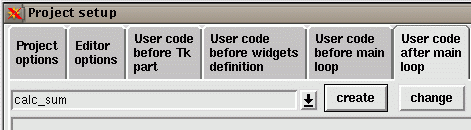
The function content should be quite primitive:
sub calc_sum
{
$total = $card1 + $card2;
}
To finish editing click on "Ok". Now open properties of
"Button_007" (labelled as "Calculate") and select reference
to newly created subroutine in field "-command".
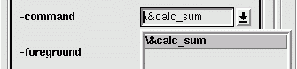
And as usual, after saving the project you can run it
instantly. If everything went well your application should
calculate the sum of two fields in "card1" and "card2"
and display the result behind it.
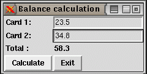
Finally we can define graceful exit procedure from our
application. Open properties of "Button_008" and enter
anonimous procedure as "-command" field content:
Lesson 4. Balloons and event bindinig
To be continued ...